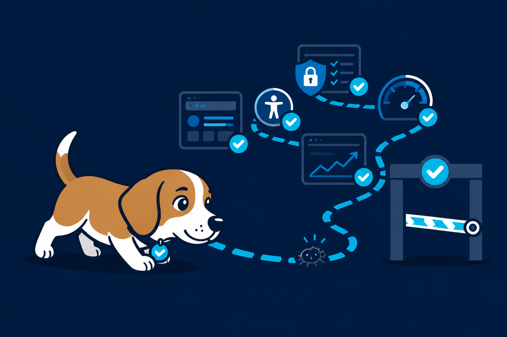
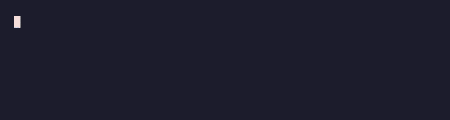
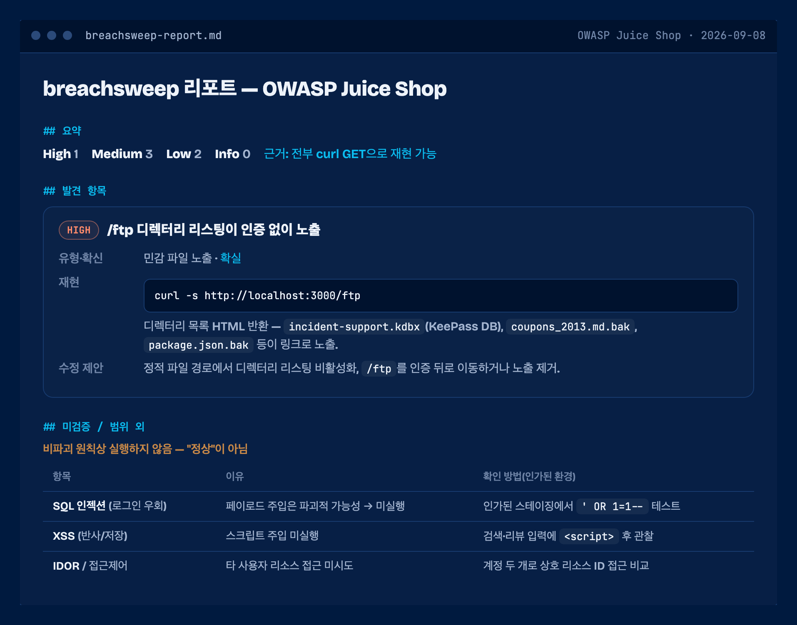
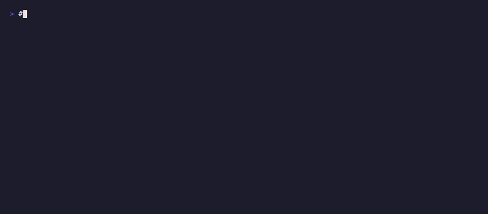

A QA beagle for your coding agent.
Plan-gated skills that run your app locally, sniff out bugs across every user path, and write an evidence-based report. The same skills work in Claude Code and Codex CLI.
- 9 skills
- Plan-gated
- Claude Code
- Codex CLI
- ~/.agents
- Apache 2.0

Every run stops for your approval first.
Nothing launches, installs, seeds, or captures until you say yes. In Claude Code that is plan mode; in Codex the agent posts the plan and waits for your OK.
Discover
Preflight works out what kind of project this is, whether the toolchain is present, how the app runs, and where captures should go.
Approve the route map
You see which screens and flows it will exercise, what it will capture, what it cannot verify, and where the report lands. Then you decide.
Run and report
It launches the app, captures every screen, exercises the flows, and writes a report with evidence and an explicit list of what it could not check. It never invents a pass.
Start in your tool.
Open your coding agent in the repo you want to test, then say the word. It shows you a plan first and waits — nothing runs until you approve.
/beagle, approve the route map, read the report. One word more — /beagle security — jumps straight to a skill.
Representative of a real run; the route map, driver, and report path are the actual ones from the Juice Shop example. Other runtimes (Cursor, Gemini CLI, Copilot) read the same skills from ~/.agents. Install →
What you get: an evidence-based report.
The real breachsweep report from that run. Every claim cites the command it came from, and everything it could not prove is listed as unverified. Korean by default, English or another language on request.

- HIGHExposed
/ftpdirectory listingBackup files and a KeePass database, reachable with no auth. Confirmed by a plain GET. - a11yForm input with no accessible labelaxe-core, injected into the live page, flagged it on every audited route with the exact node.
- UNVERIFIEDSQL injection, XSS, IDORAll present by design. TestBeagle left them in the unverified column instead of claiming them, because a non-destructive run cannot prove them. It never counts an unexercised path as a pass.
Under the hood: the real commands, start to finish

The same run at the shell level — preflight, agent-browser driving the app, the /ftp finding, and the refusal table.
Nine skills, one trail.
Each skill is a portable folder your agent reads. Point one at a repo you can run locally: web, iOS, Android, an API, or a monorepo.
-
preflight run first
Checks whether the repo can be run and tested locally: project type, toolchain, how it runs, where screenshots and media go.
preflight this repo
-
bugsweep
Full-path functional QA. Screenshots or video of every screen, plus real interaction across every flow from signup onward.
run a full QA pass on the web app
-
breachsweep
Security testing of an app you own: authorization and IDOR, injection, secret exposure, headers, cookies and CORS. Local and non-destructive.
pentest my app
-
a11ysweep
Accessibility and UX: contrast, tap-target size, ARIA and labels, keyboard navigation, locale parity, and generated-UI slop.
audit accessibility
-
perfsweep
Performance: Lighthouse, load time, jank, bundle size, and low-power or energy use.
run a Lighthouse pass
-
casewright
Turns flows and verified findings into reusable automated tests in the repo's own framework: e2e, integration, regression.
write e2e tests for the login flow
-
scriptify
Freezes a discovered flow into a committed, repo-native shell script so it re-runs without an agent.
make a capture script
-
snap
Screenshots of every screen saved as image files. Capture only, no analysis.
capture all screens
-
repro
Records a video that reproduces a flow or a bug, and saves the clip.
record a repro video
Ask in plain language.
Open your coding agent in the repo you want to test and say what you want. The agent matches your request to a skill and follows it.
| Want to | Say something like |
|---|---|
| Check it can even be tested locally | preflight this repo |
| Full QA with screenshots of every screen | run a full QA pass on the web app |
| Security check on your own app | security-check my API |
| Accessibility and UX | audit accessibility |
| Performance | run a Lighthouse pass |
| Generate test cases | write e2e tests for the login flow |
| Freeze it into a re-runnable script | make a capture script |
| Just get screenshots of every screen | capture all screens |
| Record a video of a bug or flow | record a repro video |
In Claude Code, /beagle starts a full run: preflight, then bugsweep. Add one word to jump straight to a skill.
/beagle security/beagle a11y/beagle perf/beagle tests/beagle snap/beagle repro/beagle script
Install
Pick your runtime. Every method installs the same skills, and re-running is safe.
Works with the richest web driver present, and names it in the report: your repo's Playwright/Cypress → agent-browser → chrome-devtools / claude-in-chrome MCP → headless Chrome.
Claude Code
plugin, recommended/plugin marketplace add TestBeagle/TestBeagle
/plugin install TestBeagle@TestBeagleCodex CLI
plugincodex plugin marketplace add TestBeagle/TestBeagle
codex plugin add TestBeagle@TestBeagleAny runtime
clone and symlink into ~/.claude, ~/.codex, ~/.agentsgit clone https://github.com/TestBeagle/TestBeagle.git
cd TestBeagle
./install.shnpx skills
cross-runtime, ~/.agentsnpx skills add TestBeagle/TestBeagle --allThe --all flag carries the whole suite, including the shared beagle-shared references. A single-skill -s preflight install pulls only that folder and will be missing the references it points to, so use --all, the plugin, or install.sh for the full suite.
- All targets git and bash.
- Web Google Chrome. For real interaction plus console and network capture, it uses your repo's Playwright/Cypress,
agent-browser, or a browser MCP; with none, it falls back to capture-only headless Chrome and reports the gap. - iOS Xcode with the simulator, on macOS.
- Android Android SDK platform-tools (adb).